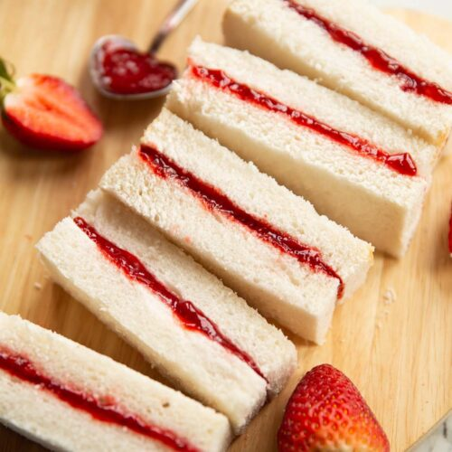

Bread Butter Jam

Bread Butter Jam Recipe is the simplest and the basic sandwich recipe even
a kid can make it easily. Usually kids make this for fireless cooking in
school competitions.
Ingredients
Steps
- Take 3 fresh bread slices
- Apply butter on one slice and jam on another slice
- Take the third slice and apply jam on it again
- Cover it and make a sandwich
- Serve it as it is or toast it